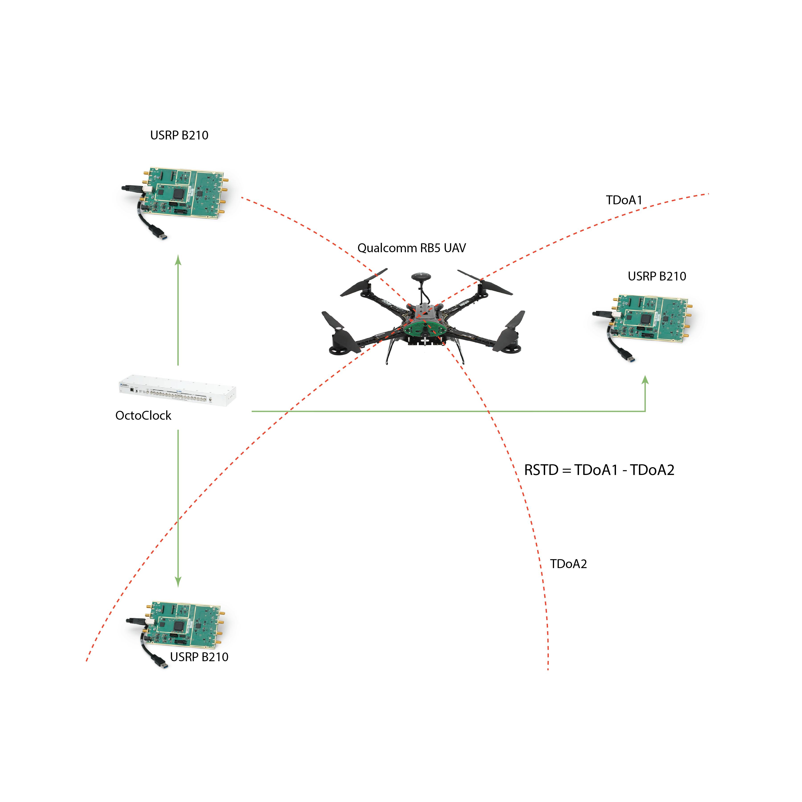
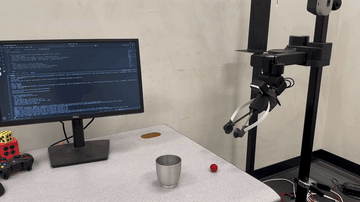
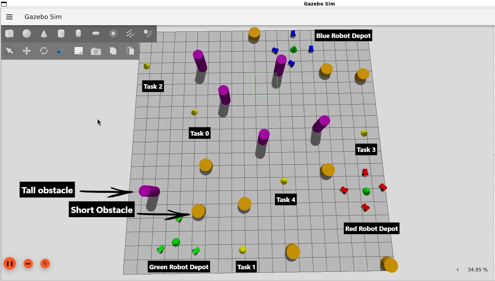
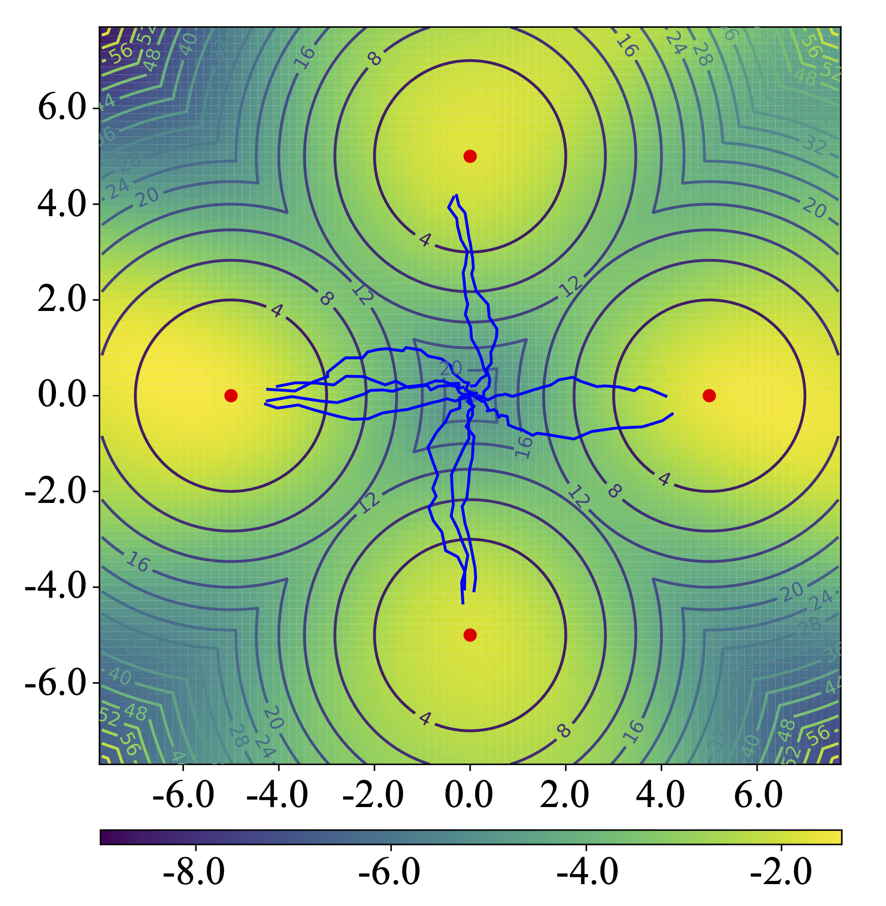
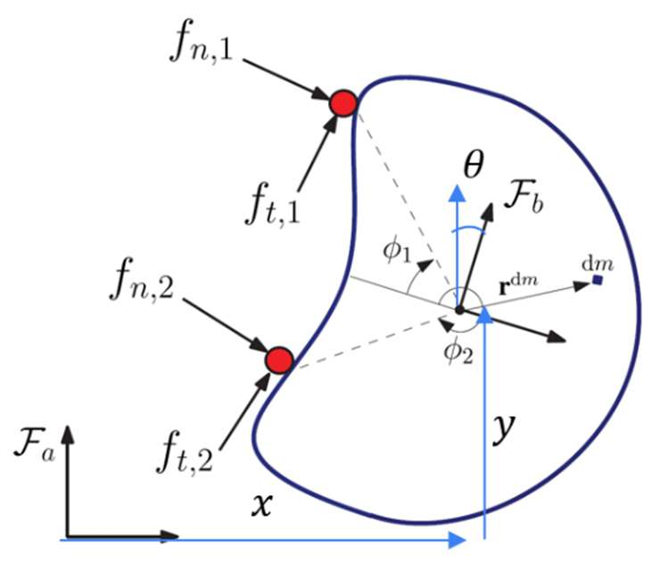
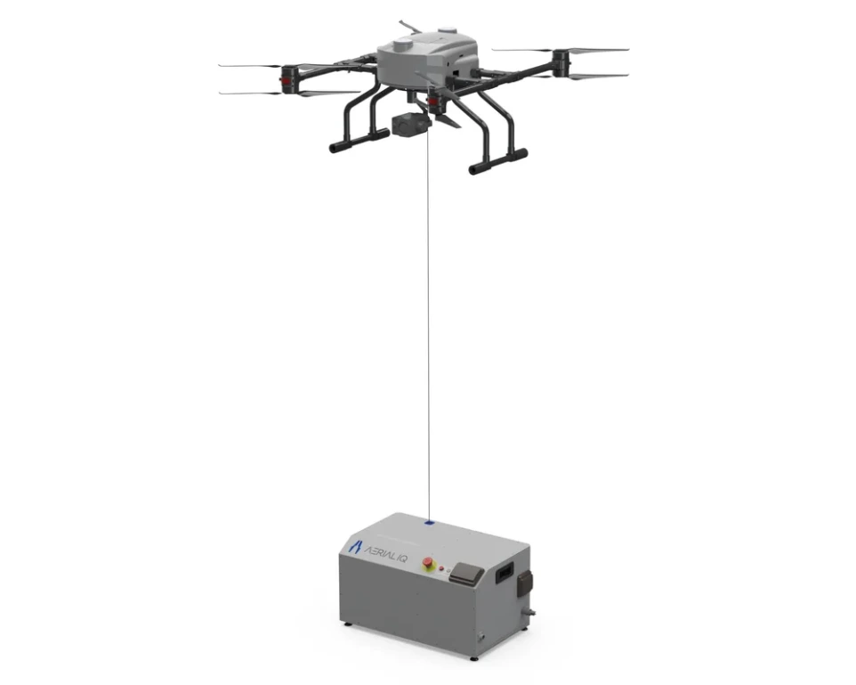

I am a Robotics and Autonomous Systems Master's graduate from Arizona State University (GPA: 4.0/4.0). At ASU I worked as a Graduate Student Research Aide at the RISE Lab, where my Honeywell-funded thesis built an end-to-end learning + state-estimation stack for 5G-based UAV localization in GNSS-denied environments. My research sits at the intersection of robotics, machine learning, and optimal control — with a focus on building systems that actually run on real hardware.
Before ASU, I spent 3.5 years as a senior UAV engineer at Aerial IQ, where I led defense-grade UAV R&D and shipped India's first commercial automated tethered drone station — from prototype to production.
I am actively looking for full-time roles in robotics, autonomy, and physical AI starting summer 2026. Resume · GitHub · LinkedIn
Research & Projects
5G-Based UAV Localization & Navigation in GNSS-Denied Environments
M.S. Thesis · Industry-Sponsored

Heterogeneous Multi-Robot Task Allocation with Deadlock-Free Coalitions
Re-implementation & Analysis · Dai et al., RA-L 2025
Maximum Entropy Reinforcement Learning via Energy-Based Normalizing Flow
Re-implementation & Reproducibility Study · Chao et al., 2024

Automated Tethered Drone Station — India's First Commercial Deployment

Publications
Work Experience
Graduate Student Research Aide
Led the design and implementation of an end-to-end 5G-based localization stack for UAVs operating in GNSS-denied environments — the technical core of my Master's thesis, sponsored by Honeywell Technologies as the industry partner.
Senior UAV Engineer
Spent three and a half years building safety-critical autonomy for production UAVs as a senior member of the flight controls and systems team. I led the design, firmware, field validation, and commercial launch of India's first automated tethered drone station — a winch-controlled platform enabling near-infinite surveillance flight times — owning everything from real-time PID cable-tension controllers in Python/MAVLink on Raspberry Pi to the hardware-software integration that keeps winch dynamics decoupled from onboard flight dynamics. In parallel, I developed perception-assisted navigation for high-altitude defense-grade UAVs, fusing inertial sensors with radar-based velocity sensing (HRVS) for robust flight in visually degraded conditions, and ran the field-testing and dataset-curation cycles that hardened the entire stack against sensor noise, actuation latency, and edge-case failure modes.
Education
M.S. Robotics and Autonomous Systems — GPA 4.0/4.0
B.Tech Aerospace Engineering (Avionics)
Awards & Honors
Vertical Flight Society (VFS) Scholarship — 2026
Skills
AI & Machine Learning
- Vision-Language-Action (VLA) models
- Deep imitation learning
- Reinforcement learning (SAC, REINFORCE, MaxEnt)
- Transformers & attention architectures
- 3D computer vision
- Probabilistic filtering (EKF / UKF)
Motion Planning & Control
- Trajectory optimization
- LQR & Model Predictive Control
- Sliding-mode control
- Sensor fusion & SLAM
- Sim-to-real transfer
- Rigid-body dynamics
Tooling & Hardware
- Python, C++, MATLAB
- PyTorch, ONNX, CUDA
- ROS 2, MuJoCo, Gazebo, Isaac Gym
- ArduPilot / MAVLink
- Ettus USRP, OpenAirInterface
- Qualcomm RB5 edge AI deployment
- Hello Robot Stretch 2